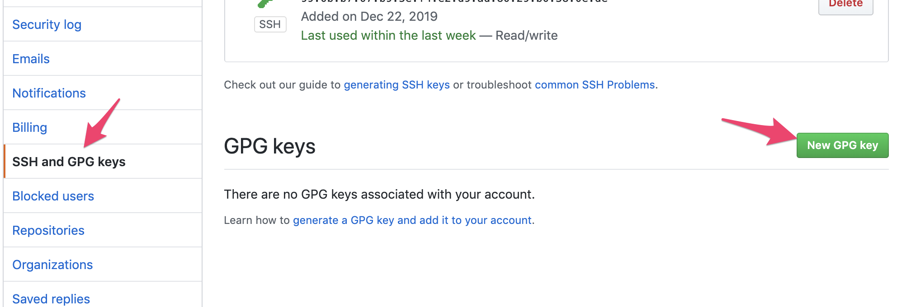

GPG를 알아보게 된 이유는, 로컬에서 여러 Git 계정을 사용하고 있는데, 다른 사용자(사용자명/이메일)로 commit된 것이 Github에 push될 때, 다른 contributor가 되는 현상이 발생했기 때문이다. 레파지토리는 owner사용자만 등록이 되었고, SSH key 역시 해당 사용자였기 때문에, 당연히 해당 사용자로 될 것이라 생각했다. 물론 push 자체는 해당 레파지토리에 승인된 사용자만 가능하다. 그럼에도 committer는 다른 사용자가 가능한 것이다.
예전에 [GitHub에서 커밋에 서명하기 - Outsider’s Dev Story]과 같은 글을 읽은 적이 있는데, 그때 당시엔 뭔소린가 했다. 이제서야 이해가 간다는…ㅠㅠ
테스트 용도로 여러 github 계정을 분리하여 사용하고 있다. 각각 github 계정별로 SSH key를 생성하여 각각 등록을 한 상태이다. 그리고 ~/.ssh/config파일에 다음처럼 해당 host를 나눈 상황이다.
~/.ssh/config
Host open-but-closed_github
HostName github.com
User git
IdentityFile ~/.ssh/openbutclosed
Host kjchoi_github
HostName github.com
User git
IdentityFile ~/.ssh/kjchoi
이 경우 Github의 SSH방식의 레파지토리 주소를 open-but-closed_github:<id>/<repository> 방식으로 접근할 수 있다. 즉 open-but-closed_github:open-but-closed/ref.git 라면 ~/.ssh/openbutclosed라는 SSH key로 /open-but-closed/ref.git 레파지토리를 접근 가능. Github에는 다른 계정끼리 같은 SSH key를 등록할 수 없으니, 어떤 사용자인지 구분이 된다. 당연히 committer도 이를 따라갈 줄 알았는데, 그건 아니었다.
Git user <> Github user
당황스러워서 이것저것 찾아봤는데, 생각해보니 Git의 author(user.name, user.email)은 Github의 contributor와 당연히 다를 수 있다. Git과 Github을 분리해서 생각하면 간단하다. Git에서는 어떤 이메일로도 commit할 수 있고, Github이라는 원격 저장소에 올리는 것이다. 그리고 Github에는 이메일을 이용하여 별도로 회원 가입을 한다. Github의 이메일과 Git의 이메일 사이에 정확한 연결고리는 없는 것이 아닐까?
어쨌건, 이를 통일하고 싶었다. 기존 commit의 작성자가 잘못된 경우 [이미 커밋된 내용에서 author(작성자) 수정하기 - 기억보단 기록을]과 같은 임시방편을 사용할 수도 있는데… git-rebase라는 것이 결국 기존 로그를 기반으로 새로운 로그를 생성하는 것 같으니… 어쨌거나 결론은 최초에 셋업을 잘 하는게 제일 좋다라고 생각이 되긴 한다.
GPG서명
그 방안으로 찾은 것이 GPG서명을 Github에 연결하는 부분이다. GPG에 대한 개념은 [GnuPG 사용법 - 기계인간 John Grib] 글이 상세하게 설명이 되어있다. 하지만 결론적으로, GPG서명을 연결하는 것이 위 문제의 해결 방안은 아닌 것 같다. author정보를 잘못 생성하였을때 committer가 다르게 나올 수 있는 부분은 동일하다. GPG는 해당 이메일과 이름으로 등록된 사용자를, 해당 이메일과 이름으로 등록된 키와 동일하다는 것을 Verified해주는 기능인 것 같다. (물론 해당 키를 진짜 해당 사람이 관리한다는 전제하에…)
어쨌건 GPG 적용한 부분을 봐보자…
GPG설치
-
Mac에서는
brew로 찾아보면, gpg관련 여러 패키지가 있다. 단순 CLI 패키지면 될 듯 하다. 위에 나온대로gpg패키지로 설치를 진행했다.$ brew search gpg ==> Formulae gpg gpg1 gpg2 gpgme libgpg-error ==> Casks gpg-suite gpg-suite-nightly gpg-suite-no-mail gpg-suite-pinentry gpg-sync kbMBP:~ we$ -
brew로 설치를 진행한다.$ brew install gpg -
이상하게
$PATH에 등록이 안된다. 설치 로그를 바탕으로 다음을.profile등에 추가export PATH=/usr/local/Cellar/gnupg/2.2.19/bin:$PATH -
한가지 추가 설정을 미리 보면 GPG_TTY 설정을 해줘야 전체 화면 프롬프트가 뜬다. (역시
.profile등에 추가)export GPG_TTY=$(tty) -
gpg --list-keys로 현재 key 조회kbMBP:~ we$ gpg --list-keys /Users/we/.gnupg/pubring.kbx ---------------------------- pub dsa2048 2010-08-19 [SC] [expires: 2020-06-15] 85E38F69046B44C1EC9FB07B76D78F0500D026C4 uid [ unknown] GPGTools Team <team@gpgtools.org> sub elg2048 2010-08-19 [E] [expires: 2020-06-15] sub rsa4096 2014-04-08 [S] [expires: 2024-01-02] -
gpg --full-generate-key로 키 생성하면 다음 옵션들을 입력한다.- 암호화 방식 (기본값은 RSA)
- 암호 키 사이즈
- 키 유효기간
- 실제 이름
- 이메일 주소
- 코멘트
중간에 passpharse를 묻는 부분이 있다. (전체화면으로 되어 캡쳐는 안되넹)
kbMBP:~ we$ gpg --full-generate-key gpg (GnuPG) 2.2.19; Copyright (C) 2019 Free Software Foundation, Inc. This is free software: you are free to change and redistribute it. There is NO WARRANTY, to the extent permitted by law. Please select what kind of key you want: (1) RSA and RSA (default) (2) DSA and Elgamal (3) DSA (sign only) (4) RSA (sign only) (14) Existing key from card Your selection? RSA keys may be between 1024 and 4096 bits long. What keysize do you want? (2048) Requested keysize is 2048 bits Please specify how long the key should be valid. 0 = key does not expire <n> = key expires in n days <n>w = key expires in n weeks <n>m = key expires in n months <n>y = key expires in n years Key is valid for? (0) Key does not expire at all Is this correct? (y/N) y GnuPG needs to construct a user ID to identify your key. Real name: open-but-closed Email address: ceo@open-but-closed.com Comment: gpg for openbutclosed You selected this USER-ID: "open-but-closed (gpg for openbutclosed) <ceo@open-but-closed.com>" Change (N)ame, (C)omment, (E)mail or (O)kay/(Q)uit? O We need to generate a lot of random bytes. It is a good idea to perform some other action (type on the keyboard, move the mouse, utilize the disks) during the prime generation; this gives the random number generator a better chance to gain enough entropy. We need to generate a lot of random bytes. It is a good idea to perform some other action (type on the keyboard, move the mouse, utilize the disks) during the prime generation; this gives the random number generator a better chance to gain enough entropy. gpg: key EF26AB9ABA9AF417 marked as ultimately trusted gpg: directory '/Users/we/.gnupg/openpgp-revocs.d' created gpg: revocation certificate stored as '/Users/we/.gnupg/openpgp-revocs.d/03BC0C0C5122335BA916BBEDEF26AB9ABA9AF417.rev' public and secret key created and signed. pub rsa2048 2019-12-30 [SC] 03BC0C0C5122335BA916BBEDEF26AB9ABA9AF417 uid open-but-closed (gpg for openbutclosed) <ceo@open-but-closed.com> sub rsa2048 2019-12-30 [E] - 암호화 방식 (기본값은 RSA)
-
다시 조회
kbMBP:~ we$ gpg --list-keys gpg: checking the trustdb gpg: marginals needed: 3 completes needed: 1 trust model: pgp gpg: depth: 0 valid: 1 signed: 0 trust: 0-, 0q, 0n, 0m, 0f, 1u /Users/we/.gnupg/pubring.kbx ---------------------------- pub dsa2048 2010-08-19 [SC] [expires: 2020-06-15] 85E38F69046B44C1EC9FB07B76D78F0500D026C4 uid [ unknown] GPGTools Team <team@gpgtools.org> sub elg2048 2010-08-19 [E] [expires: 2020-06-15] sub rsa4096 2014-04-08 [S] [expires: 2024-01-02] pub rsa2048 2019-12-30 [SC] 03BC0C0C5122335BA916BBEDEF26AB9ABA9AF417 uid [ultimate] open-but-closed (gpg for openbutclosed) <ceo@open-but-closed.com> sub rsa2048 2019-12-30 [E] -
가이드에 따라 해지 인증서도 생성해둠세
kbMBP:~ we$ gpg --output revoke.asc --gen-revoke open-but-closed sec rsa2048/EF26AB9ABA9AF417 2019-12-30 open-but-closed (gpg for openbutclosed) <ceo@open-but-closed.com> Create a revocation certificate for this key? (y/N) y Please select the reason for the revocation: 0 = No reason specified 1 = Key has been compromised 2 = Key is superseded 3 = Key is no longer used Q = Cancel (Probably you want to select 1 here) Your decision? 0 Enter an optional description; end it with an empty line: > Reason for revocation: No reason specified (No description given) Is this okay? (y/N) y ASCII armored output forced. Revocation certificate created. Please move it to a medium which you can hide away; if Mallory gets access to this certificate he can use it to make your key unusable. It is smart to print this certificate and store it away, just in case your media become unreadable. But have some caution: The print system of your machine might store the data and make it available to others! -
확인해보면
revoke.asc파일이 생성되어 있음kbMBP:~ we$ ls -al revoke.asc -rw------- 1 we staff 548 Dec 30 15:18 revoke.asc -
확인
kbMBP:~/Sandbox/open-ref we$ gpg --list-secret-keys --keyid-format LONG /Users/we/.gnupg/pubring.kbx ---------------------------- sec rsa2048/EF26AB9ABA9AF417 2019-12-30 [SC] 03BC0C0C5122335BA916BBEDEF26AB9ABA9AF417 uid [ultimate] open-but-closed (gpg for openbutclosed) <ceo@open-but-closed.com> ssb rsa2048/227E2434B9FC6EFB 2019-12-30 [E] kbMBP:~/Sandbox/open-ref we$ gpg --list-keys /Users/we/.gnupg/pubring.kbx ---------------------------- pub dsa2048 2010-08-19 [SC] [expires: 2020-06-15] 85E38F69046B44C1EC9FB07B76D78F0500D026C4 uid [ unknown] GPGTools Team <team@gpgtools.org> sub elg2048 2010-08-19 [E] [expires: 2020-06-15] sub rsa4096 2014-04-08 [S] [expires: 2024-01-02] pub rsa2048 2019-12-30 [SC] 03BC0C0C5122335BA916BBEDEF26AB9ABA9AF417 uid [ultimate] open-but-closed (gpg for openbutclosed) <ceo@open-but-closed.com> sub rsa2048 2019-12-30 [E] kbMBP:~ we$ gpg -k /Users/we/.gnupg/pubring.kbx ---------------------------- pub dsa2048 2010-08-19 [SC] [expires: 2020-06-15] 85E38F69046B44C1EC9FB07B76D78F0500D026C4 uid [ unknown] GPGTools Team <team@gpgtools.org> sub elg2048 2010-08-19 [E] [expires: 2020-06-15] sub rsa4096 2014-04-08 [S] [expires: 2024-01-02] pub rsa2048 2019-12-30 [SC] 03BC0C0C5122335BA916BBEDEF26AB9ABA9AF417 uid [ultimate] open-but-closed (gpg for openbutclosed) <ceo@open-but-closed.com> sub rsa2048 2019-12-30 [E] kbMBP:~ we$ gpg -K /Users/we/.gnupg/pubring.kbx ---------------------------- sec rsa2048 2019-12-30 [SC] 03BC0C0C5122335BA916BBEDEF26AB9ABA9AF417 uid [ultimate] open-but-closed (gpg for openbutclosed) <ceo@open-but-closed.com> ssb rsa2048 2019-12-30 [E] kbMBP:~ we$ gpg --armor --export open-but-closed -----BEGIN PGP PUBLIC KEY BLOCK----- mQENBF4Jli4BCADTWvy2AdaUuzG/ggQbVw+8+VpgJeLVF4Wgrsm+pyGwTggvjAOj 3TBtPBUesmcTXnFef0GzWqEeYOJM4dzKV4lQTg45n2sV0fR5jP17UJBjWfyZS23I IqEgLfjCGC5fNWe3JV2QSV7Jf2QLLT39Ir1MPPczOA2NMG9P82chcxfG5a2aXtX7 QfWxMF9qDhYDIEIsEHZl1A8JkJwjqhxDx9dgZXll4uDY2xYlvEHopo/0LUtYl4nV [중간생략] jmiWn9/ILtCan7Z6n2vWVi2z7LckLRrqpSgL8glR6eH0Gc1KcXYO6H29RqPKouOu /ixiB281I6fTv6OTAYqAn6c0TBCp4lbZ8I0iyG4l/cwKcLPrq6+OSRh6ZgwSeMg5 /2dZJ7J3QQZR2+ztzHfaNC6S1mVx4ALM6Lo2C9lXZQARAQABiQE2BBgBCAAgFiEE A7wMDFEiM1upFrvt7yarmrqa9BcFAl4Jli4CGwwACgkQ7yarmrqa9Be1dAgAkqWC Kae5GyT2goegJEplz8OmrmfOiGCXcIvi7MiYApJcymaZAs6dXo+0VbzVH/miRmm0 pFMaiw/f7LP7/1xghjfYjW+K8bzsT8xa6OrkmyZ+MTx3qSUmqdHocJs++hZP/1Xs jcl+wZA5AXcypMl7o9muacM0dpxVa9O0nd8QlJF/vKQR3MoU18viAegW5f8DKHOz Pd1BSzBkbi0ITykTrWjSQijkfdzFIqbDFzG8vJZT3JwD7NUe4Y/VXx/tTIYSnyqb muENjseyBJ6MNj6I2wIxtWC/slbTD2JIL17ivrKEeU4NcbysoO9jnx3zTzd1zWF4 DH0JzowyghlDi+rghw== =2nzJ -----END PGP PUBLIC KEY BLOCK-----
새로운 키는 다음 명령어로 생성할 수 있다.
--gen-key--full-generate-key
Github에 GPG키 등록
Repository의 Setting으로 가서, SSH and GPG keys에서 등록

잘 넣으면

등록이 완료됨…

Git config
이제 git config로 다음 내용을 셋업하면 된다.
-
gpg.program: gpg 사용 프로그램,gpg로 -
commit.gpgsign:commit명령어 시-S옵션을 붙여야 GPG서명이 함께 들어간다. 이를 기본값으로 하고 싶으면true로 설정 -
user.signingkey: GPG의secret key값을 입력.gpg --list-secret-keys --keyid-format LONG명령어를 했을 때sec rsa2048/뒤로 나오는 문자셋이다.kbMBP:~/Sandbox/open-ref we$ gpg --list-secret-keys --keyid-format LONG /Users/we/.gnupg/pubring.kbx ---------------------------- sec rsa2048/EF26AB9ABA9AF417 2019-12-30 [SC] 03BC0C0C5122335BA916BBEDEF26AB9ABA9AF417 uid [ultimate] open-but-closed (gpg for openbutclosed) <ceo@open-but-closed.com> ssb rsa2048/227E2434B9FC6EFB 2019-12-30 [E] -
설정 확인
$ git config -l ... user.name=open-but-closed user.email=ceo@open-but-closed.com user.signingkey=EF26AB9ABA9AF417 ... commit.gpgsign=true gpg.program=gpg ...
이제 commit을 하면 Github 오른쪽에 Verified가 뜬다.